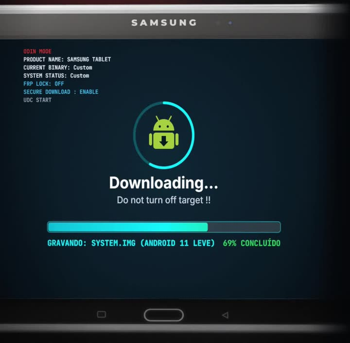

Só o guia
Pra quem quer ir por conta própria.
R$27,90
- Guia do seu modelo, num link só seu
- Cada passo narrado e cada erro previsto
- Acompanhamento individual no WhatsApp
O PDF que não abre, a aula que trava, o app que fecha sozinho. Me diz qual é o seu tablet e eu te entrego o passo a passo pra ele voltar a dar conta disso, feito pro seu modelo.
R$ 27,90, pagamento único. Entrega média agora: 22 min. 7 dias de garantia.
Pegar o guia genérico gratuito3.894pessoas que eu ajudei a melhorar o notebook velho delas.
Sou formado em Engenharia de Software. Ressuscitei um notebook do lixo e o meu tablet, parado no Android 5 desde 2017. Agora é a vez do seu.
É cerca de 1% do preço de um tablet novo bom. E o seu já está pago.
Seu tablet está na gaveta porque abrir um PDF virou espera e a aula online trava no meio. Quando o notebook que eu tirei do lixo voltou a funcionar, a minha DM virou fila. Eu ajudei 3.894 pessoas a melhorar o notebook delas.
Com tablet é mais delicado. Cada modelo tem um nome interno, uma variante e um arquivo próprio. O tutorial que salvou o tablet do vizinho pode travar o seu.
Então eu fiz diferente: você me diz qual é o seu tablet, eu monto o caminho dele.
parado desde 2017
O hardware é o mesmo de 2017. Só o sistema mudou.


A resposta que você precisa está na página 27, escrita por alguém que sumiu em 2021.
O arquivo que todo mundo usou não existe mais.
Uma letra diferente no modelo e o tablet não liga mais.
Aparece um erro que o tutorial não mostrou e você fica sozinho com o tablet desligado na mão.
Nem todo tablet tem um sistema novo feito pela comunidade. Isso não quer dizer que ele não pode virar outra coisa.
As configurações escondidas que mudam a resposta do sistema, e a troca do que é pesado pelo que é leve.
Com um computador e um cabo, a gente arranca os apps que a fábrica forçou e que o tablet não deixa remover. É mexer no sistema por dentro, coisa que app de limpeza não faz.
Se existe uma versão feita por voluntários pro seu modelo, o guia te leva até ela, do primeiro passo ao primeiro boot. Foi o que eu fiz: do 5 pro 11.
Quase todo tablet Android a partir da versão 5 chega pelo menos ao nível 2. Você descobre até onde o seu vai logo no começo do guia.
Você recebe um link. Abre no celular ou no computador e segue no seu ritmo.
Entrega média agora: 22 min, no WhatsApp que você informar na compra.
Pra quem quer ir por conta própria.
Pra quem quer chegar no fim sem travar em nada.
Pagamento único, Pix ou cartão. Logo depois, eu te chamo no WhatsApp que você informou. Entrega média agora: 22 min.
Recebeu o guia e não era o que você esperava? Pede o reembolso em até 7 dias e o dinheiro volta inteiro.
Não. Eu uso o Claude pra pesquisar e montar o seu guia. Você só segue.
Pro nível 1, não. Pros níveis 2 e 3, sim: um computador e um cabo USB que transfira dados.
Com qualquer tablet Android: Samsung, Lenovo, Multilaser, Positivo, Motorola, Xiaomi e outros.
Se existir sistema da comunidade pro seu modelo, sim, o guia te leva até ele. Se não existir, o seu tablet vai até o limite pelos outros níveis.
Eu pesquiso o seu modelo exato. Se não existir sistema da comunidade pra ele, o guia leva o tablet até o nível 2 e explica por que ele para ali.
Mexer no sistema sempre tem algum risco, e eu não vou esconder isso. O guia existe pra reduzir esse risco ao mínimo: arquivo certo, ordem certa e rota de fuga em cada etapa.
Com o guia + suporte, você me chama e a gente resolve junto. Só com o guia, cada erro conhecido já vem com a saída, e a rota de fuga devolve o tablet ao estado de fábrica.
Logo depois do pagamento eu te chamo no WhatsApp que você informou, pergunto o modelo e te mando o link do seu guia.
Dá, pagando só a diferença: R$ 70,00.
ele está na gaveta agora.